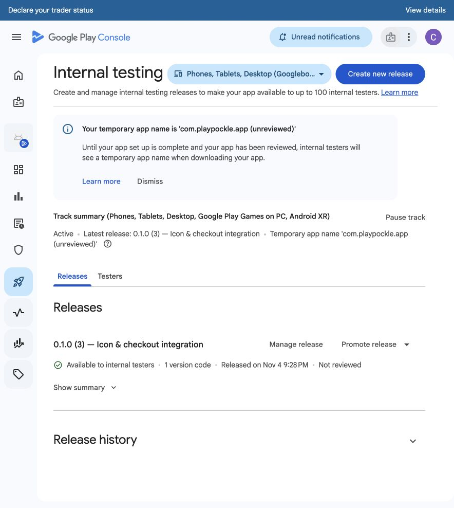
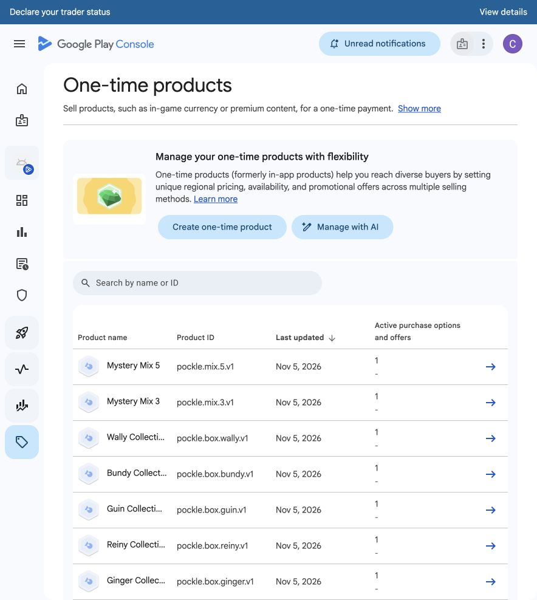

Approved master
The approved artwork is unchanged.
Version 3 published to internal testing; RevenueCat mapping pending. No real purchase or phone installation has been verified. Production checkout is disabled.
The approved artwork is unchanged.
Actual packaged background with 108dp-to-72dp padding and a transparent foreground. Local mask preview, not a phone screenshot.
The fallback also uses the approved image, replacing Unity’s logo.
All 13 Google products are Active at the approved US prices, with localized regional prices. The two-account owner group is saved for license testing. RevenueCat’s Android products and offering mappings are still incomplete; its Chrome pages went blank during configuration. Apple consumables still need pricing/metadata.
The owner signed version 3, the signature and payload were verified, and Google Play reports it available to internal testers. Actual sandbox checkout, reveal and restart remain unverified. The server policy stays off until the product mappings are complete.


Integration and owner-only setup guide · Artifact verification · Coming-soon Boxes captures